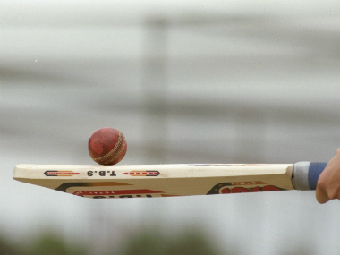
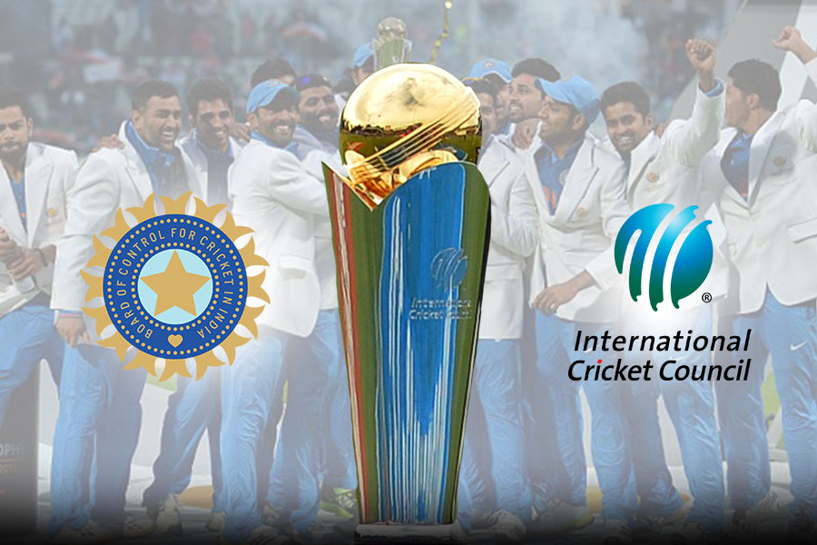
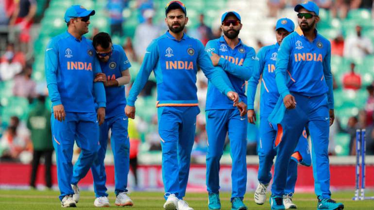

Cricket




I like cricket.when i was child at that time i every day i played cricket with my freinds.I like virat kohli because of He is a youth icon: Youngsters across the country swear by his approach to life. He likes to work hard and party harder, and lives his life on a perpetual high.He is unapologetic: Virat wears his heart on his sleeves - and his aggression on his jersey. Whether it's sledging or questioning dubious decisions, what's on his mind is on his lips.He is a style guru: That sexy stubble. That quizzical gaze. He's the stuff of many teen dreams. Add to that his escapades off the field too, he's the perfect bad boy for the good girls.He is a softie at heart: Partying, sledging, PDA over, this one is a mamma's boy. "Coming home to mom and home-cooked food is the best feeling in the world," one of his tweets read.He makes PDA cool: When Virat practices PDA, India goes weak in the knees. Girls have a tough time choosing between SRK's open arms and Virat's kisses bouncing off the surface of his bat.